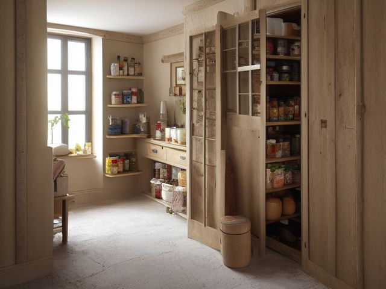

Pantry micro zone
The Backstock and Bulk
The bulk storage, in the Pantry. Holds the reserve that feeds the working shelves, and nothing else. Sacks of rice, cases of tinned tomatoes and packs of kitchen roll, each written on with the month it arrived, all standing at or below waist height. A maximum number written on the shelf edge for each line, and the count on the shelf sitting at or under it. Nothing stacked in front of anything else.
One session: 45-75 min, most of it in Sort and in the lifting, since bulk packs are heavy and each one needs dating before it goes back.
The short version
- Sort. Open up the back of this zone and meet what you forgot you owned
- Straighten. Weight decides height, sacks and cases go on the floor
- Shine. Sweep the floor of this zone
- Safety. Fall, cut, or crush: a stacked column of cases is stable right up until somebody
- Standardize. Write a maximum for each line on the shelf edge, two of this
- Sustain. The gap is the signal and the trip is the trigger
Each step in full, with what to have on hand and what done looks like, below.
Where it is
Pantry
5 micro zones, one session each
- 1The Dry Goods Shelves
- 2The Canned and Jarred Goods
- 3The Baking Zone
- 4The Snack and Lunch Zone
- 5The Backstock and Bulk
What done looks like
Holds the reserve that feeds the working shelves, and nothing else.
- Sacks of rice, cases of tinned tomatoes and packs of kitchen roll, each written on with the month it arrived, all standing at or below waist height
- A maximum number written on the shelf edge for each line, and the count on the shelf sitting at or under it
- Nothing stacked in front of anything else
What done looks like
Sacks of rice, cases of tinned tomatoes and packs of kitchen roll, each written on with the month it arrived, all standing at or below waist height. A maximum number written on the shelf edge for each line, and the count on the shelf sitting at or under it. Nothing stacked in front of anything else.

Common items here
- Sacks of rice
- Cases of canned goods
- Kitchen roll and paper napkins
What belongs, and what strays in
Belongs here:
- Sacks, cases and packs, each marked with the month they arrived
- One row per line, at or below waist height, at or under its written maximum
Strays in and should leave:
- A second spare of a line you already hold one of
- A twelve-pack of a sauce nobody liked
- Anything stacked in front of another case of the same thing
Check these before you start
- Fall, cut, or crushCases stacked above chest height, and a heavy rice sack lifted off the floor with a twist in your back. Stack low, and slide the sack out onto a step or a chair before you lift it properly.
- FallA floor-stacked case left near the doorway of a dim pantry is a shin-height trip in the dark. Keep the floor inside the door clear and put a light where your hand reaches it before your foot does.
Which of these is true here?
Match what you are actually seeing in the bulk storage to why it keeps happening, then start at the pass that fixes that, not the top of the list.
A second sack of rice or a twelve-pack nobody liked turns up when you finally clear the back of this zone
- I bought it for the unit price without checking whether I'd actually used up the last one. Confirm in 30 seconds: Count what you used in the past month. If the honest number is a third of what is stored here, the space is not too small. If that checks out, start at Sort.
- There's no written maximum for this item, so nothing stopped the extra one coming home. Confirm in 30 seconds: Ask two people in the house to describe this zone when it is finished. Two different answers means there is no standard to keep. If that checks out, start at Standardize.
- It's a good deal I'm not ready to admit didn't work out, so it stays instead of moving on. Confirm in 30 seconds: Pick up one piece. If your first thought is a verb (pay, sign, call, decide) rather than a place, it needs a decision, not a home. If that checks out, start at Sort.
A case near the bottom of a stack shows a soft, damp corner instead of the crisp cardboard everything else has
- Nobody has actually lifted and checked the underside of the bottom case in a while. Confirm in 30 seconds: Ask who resets this zone. If the honest answer is "whoever gets to it" or two names with no agreement, there is no owner. If that checks out, start at Sustain.
- Checking underneath a stacked case means unstacking it first, so it doesn't happen often. Confirm in 30 seconds: Time how long it actually takes to reach and wipe the surface. If it requires moving something first, that cost is why it is skipped. If that checks out, start at Shine.
- That corner is against an outside wall that sweats, and nothing routes stock away from it. Confirm in 30 seconds: Stand where you use it and count the steps to where it is kept. More than two is the wrong cabinet. If that checks out, start at Straighten.
A case is stacked in front of another case of the same thing, so the older one at the back never gets pulled first
- There's no arrangement that keeps this one row deep, so a new case just goes wherever there's floor space. Confirm in 30 seconds: Ask two people in the house to describe this zone when it is finished. Two different answers means there is no standard to keep. If that checks out, start at Standardize.
- The gap left by the front case emptying isn't the trigger for pulling the one behind it forward, it just gets refilled from the front again. Confirm in 30 seconds: Name the moment it happens. If the answer is "when I get round to it", there is no trigger and it will not survive a bad week. If that checks out, start at Sustain.
- I can't see behind the front row to know an older case is even back there. Confirm in 30 seconds: Open the door and, without moving anything, name what is at the back. If you cannot, that stock is invisible. If that checks out, start at Straighten.
Only have 15 minutes? Open up the back of this zone and meet what you forgot you owned: any item you hold more than one genuine spare of moves forward into the working shelves this month or it leaves. Victory: Every remaining pack carries its arrival month, and nothing sits stacked in front of an older case of the same thing.
The six passes, in order
Work them in this order. Sorting after you have arranged things means arranging things you were about to remove.
This zone's full kit list is below, after the method. Skim it first if you would rather gather everything before you start.
Sort
Decide what stays. Everything else leaves the zone now.
Open up the back of this zone and meet what you forgot you owned: the second sack of rice, the twelve-pack of a sauce nobody liked, the case of sparkling water from a party in another season. Anything you hold more than one spare of moves forward into the working shelves this month or it leaves.
What to store it in, now that you know what you are keeping
Bins and shelves are for what Sort left behind, not a stand-in for it. Buying storage before sorting means buying a container for things you have not yet decided to keep.
Only if it applies to the bulk storage: 4 more
Not every home needs these for the bulk storage. Each one is here because some do, and the reason is next to it.
- Can Riser ×2 Reveal canned goods and maintain FIFO, in the Straighten, Standardize and Sustain passes. Do not overload; anchor wall-mounted or tall systems where required.
- Food Date Label Kit Date leftovers and opened food, in the Straighten, Standardize and Sustain passes. Do not overload; anchor wall-mounted or tall systems where required.
- Large Clear Latching Bin ×2 Contain seasonal, garage, and bulk items, in the Straighten, Standardize and Sustain passes. Do not overload; anchor wall-mounted or tall systems where required.
- Airtight Food Container Set Protect dry goods and improve inventory visibility, in the Straighten, Standardize and Sustain passes. Do not overload; anchor wall-mounted or tall systems where required.
Straighten
Give what stays a home, placed where the hand actually reaches.
Weight decides height. Sacks and cases go on the floor or the bottom shelf on a board, kitchen roll and paper napkins go up top because they are light, and everything sits one row deep so you never move a case to see a case.
Shine
Clean it, and use the cleaning to inspect what you cannot see when it is full.
Sweep the floor of this zone and check the underside of the bottom case for damp, where a concrete floor or an outside wall is sweating. Cardboard that has gone soft is warning you about moisture before your food does.
Surface by surface, all 5 of them, with what to use on each.
Safety
Make the zone safe for everybody who uses it, including the shortest person.
Fall, cut, or crush: a stacked column of cases is stable right up until somebody pulls the second one from the bottom. Stack no higher than your chest, bend at the knees for the rice sack, and never store a heavy case overhead where getting it down means catching it.
Standardize
Write down the best way you know today, so it survives you forgetting.
Write a maximum for each line on the shelf edge, two of this, one of that, and mark every pack with its arrival month as it goes in. Undated bulk is where the saving quietly expires out of sight.
Sustain
Attach the reset to something that already happens, so it keeps itself.
The gap is the signal and the trip is the trigger. When a working container runs empty, its replacement comes off the front of backstock and the item goes on the list in the same movement, by the person who emptied it. No stock take, ever, and the writing costs twenty seconds. Slip is a pack stacked in front of another, or a count above the maximum written on the shelf edge. Recovery is pulling the oldest forward and stopping buying that line. Offers break this zone, because a genuinely good price is the reason a maximum gets ignored.
The kit this zone called for
Everything above assumed you had these already. Types of thing, not brands: anything you already own that does the job is the right one to use.
- Color-coded microfiber cloth set ×12 Shine Wash by use color; avoid fabric softener.
- Neutral pH multi-surface cleaner Shine, Sustain Verify surface compatibility; lock around children and pets.
- Compact vacuum with attachments Shine Use appropriate attachment.
- Keep, Relocate, Donate, Recycle, Trash container set ×5 Sort Do not block exits.
- Portable cleaning caddy Straighten, Shine, Sustain Secure chemicals from children and pets.
- Portable label maker Standardize, Sustain Follow surface and adhesive guidance.
- Removable write-on labels Standardize Test on delicate finishes.
Only if it applies to the bulk storage: 4 more
- FIFO Date Marker Standardize, Sustain Install and use according to product instructions.
- Min-Max Inventory Label Standardize, Sustain Install and use according to product instructions.
- Water-resistant permanent labels Standardize, Sustain Avoid irreplaceable surfaces.
- Shelf Location Label Set Standardize, Sustain Install and use according to product instructions.
The warehouse pack that was not a saving
You bought the big one because the unit price was better, and some of it went stale, rancid, or simply boring before you reached the bottom. The honest question is not whether the price was good. It is whether you have ever finished one of these in time. So write down, for each item, the largest quantity you have genuinely used up before it turned, and make that number your maximum on the shelf edge. Until your count falls back below that number you do not buy the item again, whatever the shelf price is doing. Anything already over the line goes forward into meals this month or out to a food bank while it is still in date. A cupboard full of food you will not eat is not a store of value, it is money you have already spent.
Cleaning it properly, surface by surface
This is a floor-and-underside zone. Sweep the floor, lift and check the bottom case for damp, and read the cardboard, because soft board warns you about moisture long before your food shows it.
Work down, not across. Whatever comes off a high surface lands on the one below it, so cleaning the floor first means cleaning it twice.
Carry these in with you. Portable cleaning caddy; Compact vacuum with attachments; Color-coded microfiber cloth set; Neutral pH multi-surface cleaner; Broom and dustpan.
- The shelf edges carrying the max-count labels
Wipe the shelf edges and the written count labels with a barely-damp cloth so the numbers stay readable from the doorway. Dry them so the ink does not run or the label lift. - The cases and sacks themselves
Wipe down the outside of each case and the sacks of rice or flour, taking dust off the tops where it settles thickest. Set them back with the arrival month still facing out. - The underside of the bottom case
Lift the lowest case and feel the underside and the board beneath it for damp. This is the spot a concrete floor or an outside wall sweats into, so it is the first place to look every time. - The floor of the zone
Sweep or vacuum the whole floor, working from the back wall out to the door. Wipe any spill with a damp cloth and dry it, since this floor stays out of sight between visits. - The back wall and the doorway floor
Wipe the back wall behind the stack, especially where it meets an outside wall, and clear the floor just inside the doorway so nothing sits at shin height in the dark.
How to clean anything else in the house, surface by surface.
Inspect as you clean. Cleaning is the only time you see the zone empty, so use it.
- Cardboard that has gone soft or dark at the bottom of a case, the moisture warning that arrives before the food spoils.
- A water stain, a bloom of mold, or beads of condensation on the back or outside wall.
- Droppings or gnawed corners low down, or a chewed sack, telling you something is coming in at floor level.
- A sack that has started to bulge, split, or leak its contents onto the shelf below.
- A case crushed or bowing under the weight above it, or rust creeping up a metal shelf leg near the damp floor.
The standard that keeps it fixed
Every pack carries its arrival month, every line has a maximum written on the shelf edge, and stock is always pulled from the front.
Reset trigger. When you get home from a big shop, you write the month on each pack with the marker that lives on that shelf, before anything gets put away.
How much the bulk storage can actually hold
A maximum number written on the shelf edge for each line, everything at or below waist height, one row deep, and the month written on each item as it arrives.
If a line is at its maximum and you are still buying, either the maximum is wrong or the buying is. Change the number on the shelf edge deliberately rather than starting a second row in front of the first. Run the honest count.
When this does not describe your bulk storage
The passes above describe the ordinary case. Plenty of real households are not ordinary, and the fix is not to skip the method, it is to run it against a different starting shape.
- No separate backstock space, only the working shelves
- Backstock becomes the back half of each working shelf, which makes the maximum number matter more rather than less. Write it on the shelf edge anyway, because the whole purpose of this zone is a ceiling you can see without counting.
- You shop a warehouse club every few months
- Size the maximum to the gap between trips, not to the size of the pack. A case that lasts five months in a house that shops every two is three months of floor you are renting to a sauce.
The rest of the pantry
Each of these is one session on its own.
- The Dry Goods Shelves
- The Canned and Jarred Goods
- The Baking Zone
- The Snack and Lunch Zone
- The Backstock and Bulk, you are here
The Pantry in full, with what each of the 5 zones is for
The pantry as a deck of 57 cards: the frictions people report in each zone, the root cause behind each one, and the timed action that clears it. Free to read or print.
Zones that do the same job, elsewhere in the house
Different room, different name, same real job. Each one is its own page because the room around it changes what actually works.
- The Diaper and Care Backstock in the nursery
- The Bulk and Overhead Storage in the garage
- The Paper and Household Backstock in the hall closet
- The Supply Cabinet in the home office
Related reading
- Is one spot in this zone always the one you skip?
- Is mail piling up on this exact surface?
- Found a duplicate of something in this zone?
- Does everyone in the house agree what "done" looks like here?
- Before you buy storage for this zone
Questions people ask about this zone
- How long does it take to reset the bulk storage?
- One session: 45-75 min, most of it in Sort and in the lifting, since bulk packs are heavy and each one needs dating before it goes back.
- What does a finished bulk storage look like?
- Sacks of rice, cases of tinned tomatoes and packs of kitchen roll, each written on with the month it arrived, all standing at or below waist height. A maximum number written on the shelf edge for each line, and the count on the shelf sitting at or under it. Nothing stacked in front of anything else.
- What is the hardest call to make in the bulk storage?
- You bought the big one because the unit price was better, and some of it went stale, rancid, or simply boring before you reached the bottom. The honest question is not whether the price was good. It is whether you have ever finished one of these in time. So write down, for each item, the largest quantity you have genuinely used up before it turned, and make that number your maximum on the shelf edge. Until your count falls back below that number you do not buy the item again, whatever the shelf price is doing. Anything already over the line goes forward into meals this month or out to a food bank while it is still in date. A cupboard full of food you will not eat is not a store of value, it is money you have already spent.
- How do you keep the bulk storage from getting cluttered again?
- Every pack carries its arrival month, every line has a maximum written on the shelf edge, and stock is always pulled from the front. When you get home from a big shop, you write the month on each pack with the marker that lives on that shelf, before anything gets put away.
- What do you need to clean the bulk storage?
- Portable cleaning caddy; Compact vacuum with attachments; Color-coded microfiber cloth set; Neutral pH multi-surface cleaner; Broom and dustpan.
- What do you clean first in the bulk storage?
- The shelf edges carrying the max-count labels. Wipe the shelf edges and the written count labels with a barely-damp cloth so the numbers stay readable from the doorway. Dry them so the ink does not run or the label lift.
- Is there a fall, cut, or crush risk in the bulk storage?
- Cases stacked above chest height, and a heavy rice sack lifted off the floor with a twist in your back. Stack low, and slide the sack out onto a step or a chair before you lift it properly.
- Is there a fall risk in the bulk storage?
- A floor-stacked case left near the doorway of a dim pantry is a shin-height trip in the dark. Keep the floor inside the door clear and put a light where your hand reaches it before your foot does.
- Why does the bulk storage do this: A second sack of rice or a twelve-pack nobody liked turns up when you finally clear the back of this zone?
- I bought it for the unit price without checking whether I'd actually used up the last one, so start at Sort; There's no written maximum for this item, so nothing stopped the extra one coming home, so start at Standardize; It's a good deal I'm not ready to admit didn't work out, so it stays instead of moving on, so start at Sort.
- Why does the bulk storage do this: A case near the bottom of a stack shows a soft, damp corner instead of the crisp cardboard everything else has?
- Nobody has actually lifted and checked the underside of the bottom case in a while, so start at Sustain; Checking underneath a stacked case means unstacking it first, so it doesn't happen often, so start at Shine; That corner is against an outside wall that sweats, and nothing routes stock away from it, so start at Straighten.
- Why does the bulk storage do this: A case is stacked in front of another case of the same thing, so the older one at the back never gets pulled first?
- There's no arrangement that keeps this one row deep, so a new case just goes wherever there's floor space, so start at Standardize; The gap left by the front case emptying isn't the trigger for pulling the one behind it forward, it just gets refilled from the front again, so start at Sustain; I can't see behind the front row to know an older case is even back there, so start at Straighten.
When you want it off the screen
Carry The Backstock and Bulk into the room
The method above is complete and free. The Whole House Print Pack puts The Backstock and Bulk and the other 113 micro zones on 684 printable cards, so the steps you just read are not stuck behind a phone screen while your hands are full.
The Print Pack, 19 dollarsJust this zone, 4 dollarsOr draw a card free
The Backstock and Bulk on its own is 4 dollars for 6 cards. All 114 micro zones is 19 dollars for 684. The whole house is the better buy; the single zone is here so you can take only what you are working on.
If The Backstock and Bulk keeps fighting back, the real problem usually sits somewhere else in the room. A one hour virtual consult is 250 dollars: we find the function, the friction and the root cause together, and you keep a written standard for the space.
See what a consult covers, 250 dollars
Not ready to pay for that either? Ask which zone first, free